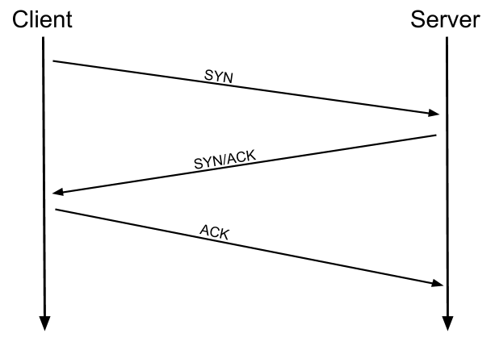
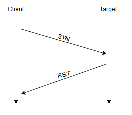
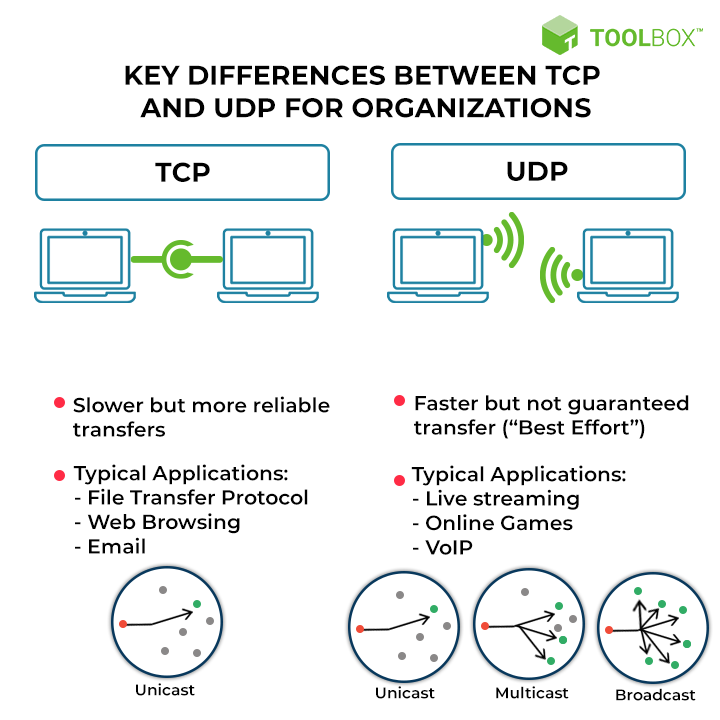

| TCP vs UDP
TCP - The Transmission Control Protocol
The Transmission Control Protocol (TCP) is one of the main protocols of the Internet protocol suite. It originated in the initial network implementation in which it complemented the Internet Protocol (IP). Therefore, the entire suite is commonly referred to as TCP/IP. TCP provides reliable, ordered, and error-checked delivery of a stream of octets (bytes) between applications running on hosts communicating via an IP network. Major internet applications such as the World Wide Web, email, remote administration, and file transfer rely on TCP, which is part of the Transport Layer of the TCP/IP suite
TCP relies on a three-way handshake (synchronization, synchronization acknowledgment, and final acknowledgment)
Communication programs and computing devices utilize TCP for exchanging messages over a network. The task of this protocol is to carry packets across the Internet and ensure the successful delivery of messages and data across networks.

UDP - The User Datagram Protocol
User datagram protocol (UDP) is a message-oriented communication protocol that allows computing devices and applications to send data via a network without verifying its delivery, which is best suited to real-time communication and broadcast systems.
UDP enables continuous data transmission (i.e., response) without acknowledging or confirming the connection
In most cases, UDP is faster than TCP because it does not assure delivery of the packets as TCP does.

TCP vs UDP

- Source:
Wikipedia.org
Spiceworks.com - Wrote:
- Updated:
- Posted: November 24, 2022 | Azar 3, 1401